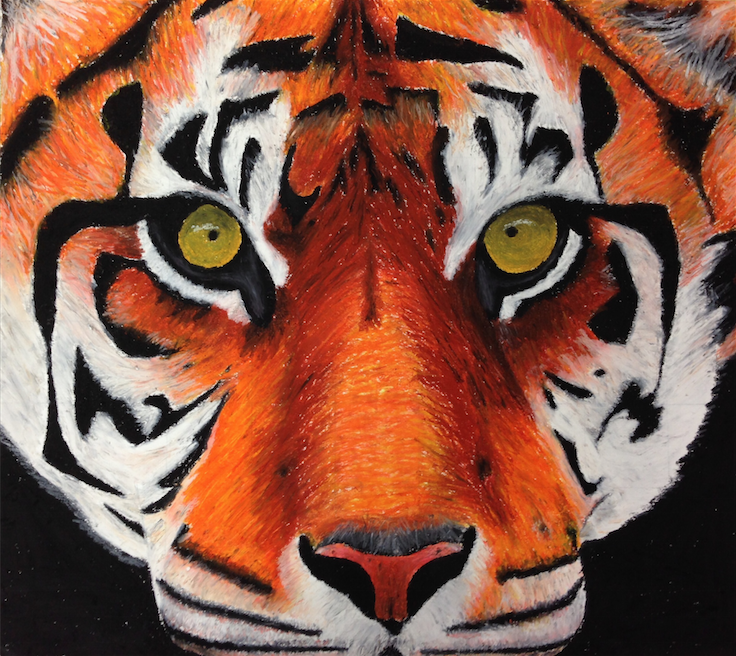
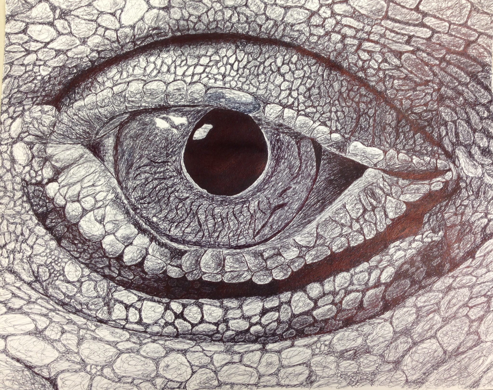
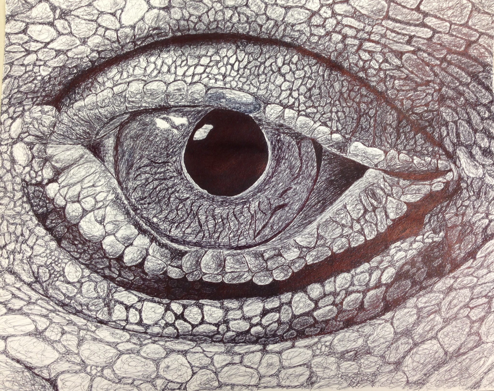

Skiing is one of, if not my favorite thing to do. I started skiing when I was 7 years old and have loved it ever since. I go on trips with friends and my family, and my favorite places to ski are Utah and Colorado. This past semester, I was lucky enough to be studying abroad in Australia and I got to ski in Australia as well. I hope to someday be able to ski in Alaska, Chile, and Switzerland. Below is the trailer to one of my favorite skiing movies, Art of Flight.
Another hobby of mine is drawing. I took art classes all throughout high school, and have taken a couple drawing courses here at Duke as well, and I'm thinking about potentially trying to add an art minor. Below are some of my favorite works that I've drawn.

 

Although I hate to admit it, and despite the fact that I'm from New York, I am a Dallas Cowboys fan. I have been a Cowboys fan for my entire life because my Dad made me this way. I know that they aren't a good team but next year is our year.
Cowboys Official WebsiteAll images on this webpage are covered by creative commons. The video on this page was produced by RedBull and was taken from YouTube.